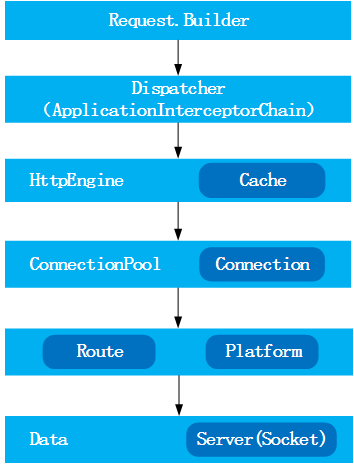
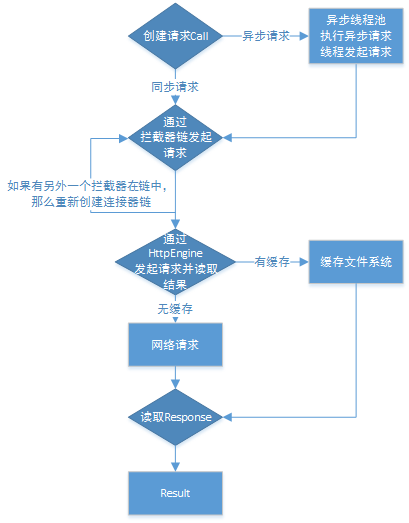

OkHttp 是一个高效的 HTTP 库:
- 支持 SPDY ，共享同一个 Socke t来处理同一个服务器的所有请求
- 如果 SPDY 不可用，则通过连接池来减少请求延时
- 无缝的支持 GZIP 来减少数据流量
- 缓存响应数据来减少重复的网络请求
总体设计

请求流程图

OkHttpClient内部缓存有Cache和InternalCache。
- 先创建
OkHttpClient的实例，然后通过Request.Builder()创建Request对象 - 通过
Diapatcher不断从RequestQueue中取出请求（Call），同步请求通过Call.execute()直接返回当前的Response，而异步请求会把当前的请求Call.enqueue()添加（AsyncCall）到请求队列中，并通过回调（Callback） 的方式来获取最后结果。 - 同步请求和异步请求最后都会通过拦截器链发起请求，根据是否已缓存调用
Cache或Network这两类数据获取接口之一，从内存缓存或是服务器取得请求的数据。
文件下载进度监听
我们在 Glide 中把 HTTP 通讯组件由 HttpUrlConnection 替换成 OkHttp。监听下载进度的功能要依靠 OkHttp 的拦截器机制。关于 Glide 的 OkHttp 模块的具体替换过程，这里不展开讲解。
在 Glide 的 OkHttp 实现模块中启用一个自定义拦截器ProgressInterceptor。
1 | public class MyGlideModule implements GlideModule { |
先新建一个ProgressListener接口，用于作为进度监听回调的工具。
1 | public interface ProgressListener { |
接着看自定义拦截器ProgressInterceptor的实现，我们在ProgressInterceptor中加入注册下载监听和取消注册下载监听的方法。同时我们通过 Response 的newBuilder()方法来创建一个新的 Response 对象，并把它的 body 替换成自定义的ProgressResponseBody，最终将新的 Response 对象进行返回。
1 | public class ProgressInterceptor implements Interceptor { |
然后我们来看自定义的ProgressResponseBody类，它继承自 OkHttp 的ResponseBody。我们在这个类当中编写具体的监听下载进度的逻辑。
1 | public class ProgressResponseBody extends ResponseBody { |
最后在将下载进度显示到界面上。
1 | public void loadImage(View view) { |
文件上传进度监听
关键点是自定义支持进度反馈的FileProgressRequestBody类，它继承自 OkHttp 的RequestBody。重写 write 方法按照自定义的SEGMENT_SIZE来写文件，从而监听进度。
1 | public class FileProgressRequestBody extends RequestBody { |
FileProgressRequestBody以 2KB 为单位上传，对外暴露回调ProgressListener来发布进度。接着构造 Request 对象。
1 | protected Request generateRequest(String url){ |
传入文件路径，formData 是与服务端的 header 约定，此处约定：name 是文件名称。定义文件上传的执行方法doUpload。
1 | protected int doUpload(String url){ |
readResponse()方法就是每次上传后读取服务端的结果：上传成功，可以让服务端返回文件的 uuid，从response.body()读取 uuid；上传失败，和服务端约定一个状态码，执行重试。
文件分块上传
分块上传和断点下载很像，就是将文件分为多份来传输，从而实现暂停和继续传输。区别是断点下载的进度保存在客户端，分块上传的进度保存在服务器，每次可以通过文件的 md5 请求服务器，来获取最新的上传偏移量。但是这样明显效率偏低，客户端可以把 offSet 保存在内存，每上传一块文件服务器返回下一次的 offSet。
Okhttp 已经支持表单形式的文件上传，剩下的关键就是构造分块文件的RequestBody，对本地文件分块，和服务端约定相关 header，保存 offset 实现分块上传。我们这里直接继承之前实现的进度监听RequestBody。
1 | public class MDProgressRequestBody extends FileProgressRequestBody { |
MDProgressRequestBody传入 Byte 数组，从而实现了对文件的分块上传。
把文件切割成 Byte 数组的方法。
1 | public static byte[] getBlock(long offset, File file, int blockSize) { |
构造 Request 对象。
1 | protected Request generateRequest(String url) { |
定义文件上传的执行方法doUpload。
1 | protected int doUpload(String url){ |
这里的readRespones读取服务端结果，更新offSet数值。
1 | protected int readResponse(Response response, StringBuilder sbFileUUID) { |